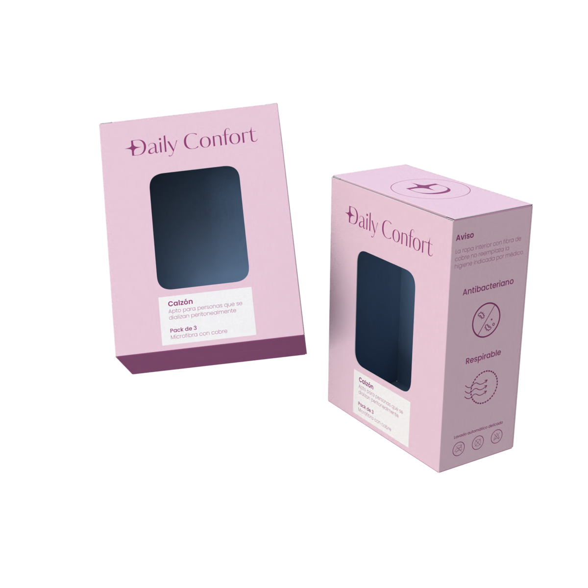
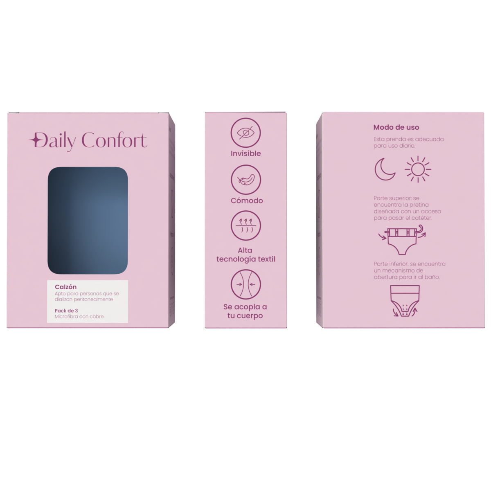
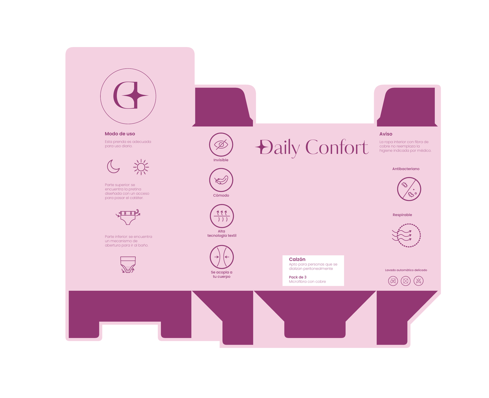

La propuesta
Renders del packaging y pliego de la caja. Haz clic en cualquier imagen para ampliarla.




Branding · Packaging
Proyecto orientado al bienestar cotidiano de mujeres que realizan diálisis peritoneal. Se desarrolló la identidad visual, el logo, la paleta de colores y la propuesta de packaging, construyendo una comunicación cercana, cuidadosa y coherente con el propósito del producto.
Arrastra sobre la caja para rotarla libremente · el arte de cada cara es el del pliego real
La identidad visual de Daily Confort fue diseñada para alejar el producto de la estética fría y clínica asociada a los dispositivos médicos, presentándolo como una prenda íntima de uso cotidiano y pensada para la persona. La paleta combina rosado suave, morado y azul claro: el rosado comunica femenidad, el morado aporta el contraste y el azul refuerza conceptos de higiene y bienestar. Para el logotipo se escogió una tipografía serif con trazos finos, que aporta una apariencia delicada y vinculada al mundo de la moda y la ropa interior. En conjunto, la tipografía y los colores construyen una identidad coherente con los atributos centrales del proyecto: comodidad, discreción, higiene y adaptación al cuerpo.
Renders del packaging y pliego de la caja. Haz clic en cualquier imagen para ampliarla.



Tipografías y paleta de color que dan cuerpo a la identidad de Daily Confort.
Títulos · logotipo
Kudryashev Display
Aa Bb Cc Dd · 0 1 2 3 4 5 6 7 8 9
Texto · apoyo
Poppins Regular
Aa Bb Cc Dd · 0 1 2 3 4 5 6 7 8 9
Morado
#923874
Azul claro
#95BBE3
Rosado suave
#F3D2E2